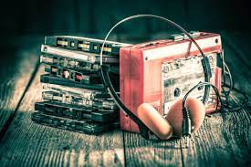

You already know music can have a calming effect on your mind and soul. But what if you can use music to inspire you too? We have a list of 45 quotes that will inspire you and blow your mind. Read on and tell us which is your favorite quote in the comments!
Download Now
CUSTOM PLAYOR
Sounds of Change trains people that work with communities and individuals living in challenging circumstances. For these people, words often are not enough to express themselves.
EASY CUSTOM
To deal with heavy emotions, and feel safe again, another approach is needed. Music bonds people and is a powerful tool to express yourself in a different way than with words.
MUSICE PLAYLIST
Making music stimulates creativity and appeals to the imagination. Composing and creating music leads to discovering other possibilities, and it strengthens coping mechanisms.

CUSTOM GALLERY
Being creative also awakens the understanding that there are always opportunities to build a future. Even if you are living in the middle of war, a devastated city or in a refugee camp.